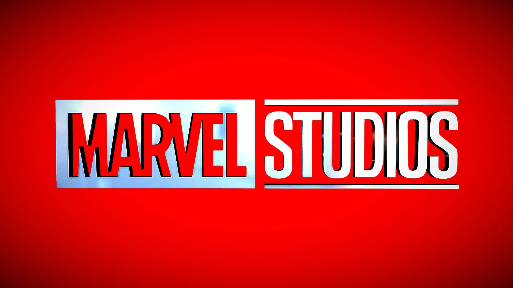
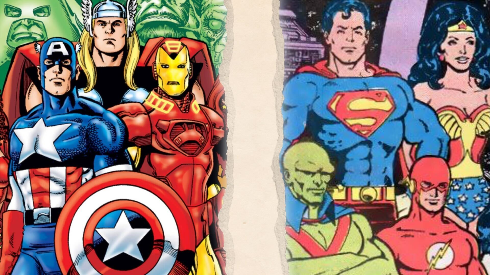
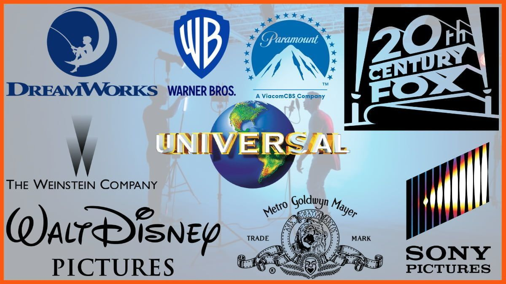

The Numbers behind Movies and TV Shows
Sreeram Veerapaneni

As someone who watches lots of movies from various different languages, I get asked a lot of questions about what I think about certain movies. Sometimes, a movie that gets bad reviews will still be entertaining to me. The idea behind the project is to compare and contrast different movies, their gross, budgets, and other data as well as the production companies to see what factors influence the success of a movie or show, to see what movies and shows are higly profitable and see which production companies are successful.
Game of Thrones

Let's start off by talking about one of the most popular TV shows of all time,
Game of Thrones. Being such a popular show, it is estimated that each episode was
generating over 215 million dollars of profit. Everyone at my high school would talk
about it, but where did it all go wrong? The last season of game of thrones was being
bashed and people were saying it ended badly. It was such a drastic turnaround and this
drastic change can be eaily visualized in this heatmap of ratings for every episode. The
Darker red indicated higher rated episodes, while the lighter the color gets to white
indicates worse rated episodes.
The Marvel Cinematic Universe
Some of the most liked and profitable movies in modern times have been Marvel movies. They earn a ridiculous amount of money, but also cost a ton to produce. Here is a bubble chart that shows correlation between the rating, budget, and gross, for all Marvel Cinematic Universe Movies that have been released.
Marvel vs DC

Marvel Vs DC has been a rivalry for years. Both having many popular superheros such as Thor and Spiderman from Marvel and Superman and the Flash from DC. However, in the recent years with the Marvel Cinematic Universe, DC movies have not been able to compete with Marvel movies. This can be seen in the small multiples bar chart below. Personally, although I do agree that Marvel does have better screenplay and writing, I also believe that Marvels success comes from their fanbase and the hype that is created around the movies. When comparing Wonder Woman to Infinity war, the rating of Infinity War higher, but not by much. This is not reflected in the Gross, where Wonder Woman only has about a quarter.
Production Companies

Some of the top production companies make a large amount of money. It is hard to imagine just how much they make. The companies that produce some of the most liked movies today such as Marvel movies do not even come close to being in the top few companies. In this chart, the top 5 production companies are displayed. The chart displays how much money they have made in total, as well as how many movies they have made which is represented by the size of the circle. Another five well known production companies are also shown which helps to emphasize the large gap in between the top 5 with other well known companies.